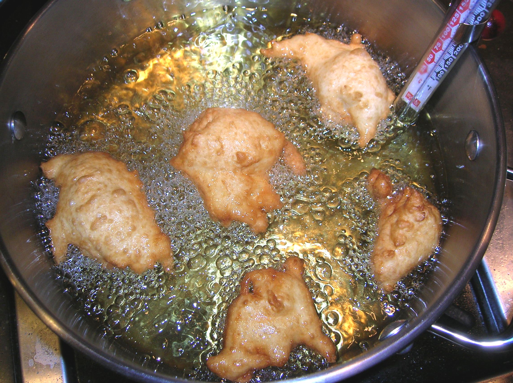

Step 3: Pour enough oil into a deep, heavy 5-qt. pot to reach a depth of 1 1/2". Attach a deep-fry thermometer to side of pot and heat oil over medium heat until it reaches 325°. Working in batches, drop dough into oil by heaping teaspoonfuls (about 1"-diameter rounds). Cook, turning occasionally, until zeppole are golden and cooked, about 4 minutes per batch. Using a slotted spoon, transfer zeppole to paper towels; drain.
